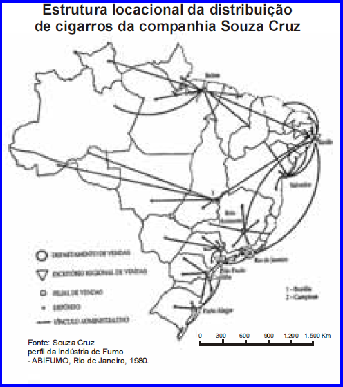
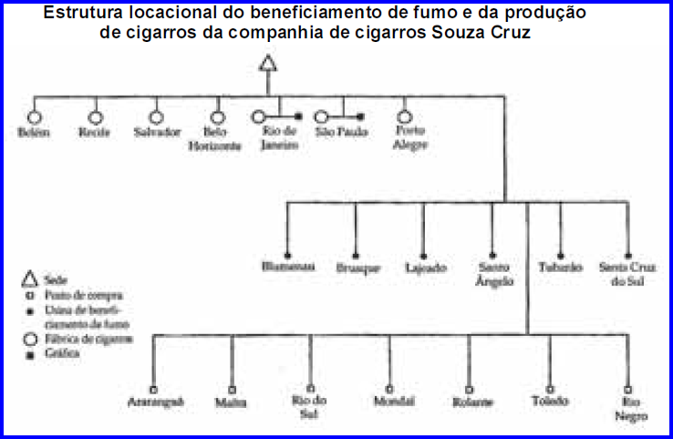

Hoje, há uma crescente segmentação territorial das etapas do trabalho, intensificando-se as trocas e relações entre regiões. Esses intercâmbios freqüentes e espessos não são obrigatoriamente entre áreas contíguas. Ao longo do tempo, cada lugar é alvo de sucessivas divisões do trabalho. Mas esse lugar, visto em um corte temporal, isto é, em um momento dado, acolhe simultaneamente várias divisões do trabalho. Como essas não se realizam independentemente dos fluxos, sobrepõem-se nele também diversos circuitos de produção.
SANTOS, Milton e SILVEIRA, Maria Laura. O Brasil: território e sociedade no início do século XXI. Rio de Janeiro: Record, 2001, p. 143-44 (com adaptações).
Uma grande corporação multifuncional e multilocacional possui, no que se refere à sua espacialidade, não apenas diversas localizações, mas também intensas e complexas interações espaciais, envolvendo, de um lado, suas próprias localizações e, de outro, numerosas empresas e grupos. Em outras palavras, o espaço de atuação de uma grande corporação constitui um meio vital para sua existência e reprodução ampliada. Esse espaço é, por outro lado, submetido à ação da corporação, sendo diferencialmente alterado em suas dimensões e conteúdos social e econômico.
CORREA, Roberto Lobato. Estudos sobre a rede urbana. Rio de Janeiro: Bertrand Brasil, 2006, p. 163 (com adaptações).
 Considerando os fragmentos de texto e as figuras acima apresentados, redija um texto dissertativo, analisando a dinâmica econômica e as novas territorialidades relacionadas à atividade econômica a que se referem os quadros.